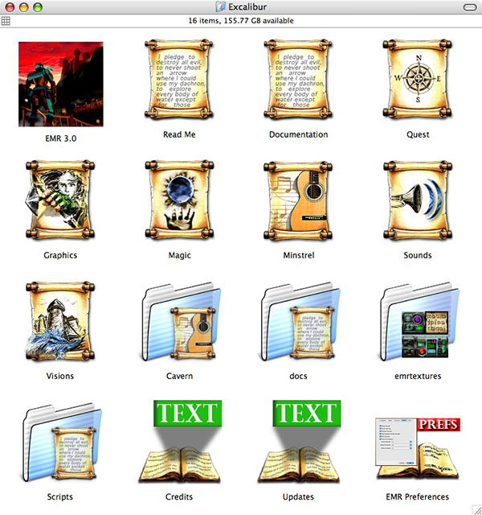

by the Marathon Map Makers Guild
Instructions
EMR 3.0 is cross platform, and is available for Mac OS X, Windows, Linux and even
Mac OS 9. There are two AlephOne engines, one called "NIBs" and the other
called "SDL". The dialog interfaces in NIBs are superior than that of
SDL, so for the Mac OS X distribution, we use NIBs. For all other distributions,
we use the SDL version. These instructions are specific to the Mac OS X distribution
of EMR. (We hope to have instructions available soon for installing on other platforms.)
- Mac OS X
- 300 MB available disk space
- 32 MB VRAM (64 MB recommended)
The EMR 3.0 package contains all the files and installers needed for playing Excalibur: Morgana's Revenge.
The following files are included with the EMR 3.0 package:
- EMR 3.0 (application bundle)
- Graphics
- Sounds
- Visions
- Quest
- Minstrel
- Magic
- Read Me
- Documentation
- Additional folders
Basically, you should see the following in your Excalibur folder after installing:
This is a screenshot from Mac OS X. Your folder will look different under Windows or Linux.
STEP 1:
If you own the EMR CD, open up the CD icon; otherwise, if you downloaded EMR, then double-click the .DMG file. This will mount the EMR Install folder.
STEP 2:
From the EMR Install folder, drag the "Excalibur" folder into your "Applications" folder. An alias to your Applications folder is provided in the Install folder, so you can use it directly.
That's all there is to it!
NAVIGATION: Once you have successfully installed EMR 3.0, double-click on the EMR application to play the game. EMR 3.0 uses it's own default keys for game navigation, defined as follows:
Forward Keypad 8 Backward Keypad 5 Turn left Keypad 4 Turn right Keypad 6 Glance left Keypad 7 Glance right Keypad 9 Sidestep left Keypad 1 Sidestep right Keypad 3 Look up Up Arrow Look down Down Arrow Look straight ahead Keypad 0 Map mode toggle Keypad . (period) Next weapon Keypad + Prev weapon Keypad - Primary Trigger Space-bar Secondary Trigger Command Action Control Run mode toggle Caps Lock
To change the keys to your own customized keys, click on Preferences from your game menu, then choose Controls from the popup menu.
NET GAMES: EMR 3.0 comes with several net games to challenge your friends and family with. To play a net game, you computers must be networked either on a local network, or on the internet. One player chooses Gather Netgame from the menu, and the others choose Join Netgame. To play on the internet, the gatherer must tell all those who are joining what his or her IP address is, and the joiners use that IP address to join.